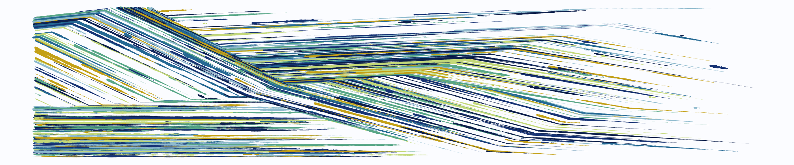

Research
My research sits at the intersection of statistical theory and computer science methodology and is part of the modern ascendancy of mining “big data” to produce fundamentally novel science from complicated datasets. Specifically, I seek to illuminate the role played by the nature and quantity of regularization as a tool for improved scientific understanding.
Through this lens, my research can be divided into four intersecting areas: (1) computational approximation methodology, (2) model selection, (3) high-dimensional and nonparametric theory, and (4) applications related to these. My work explores and exploits the connections between these areas rather than approaching them separately—my contributions have been developed out of the pressing need to justify methodology as implemented in applications rather than in a vacuum devoid of empirical motivation. My research program seeks to generate statistical guarantees for the procedures that applied researchers use while also developing methodology for complicated, high-dimensional problems. Within this context, much of my work involves what is referred to as regularization—the process of mathematically balancing complex but meaningful scientific models with a preference for simple fundamental structures.

Recent papers and preprints
Incident COVID-19 Infections Before Omicron in the US
Lobay, R, Srivastava, A, Tibshirani, RJ, McDonald, DJEpidemics, XX, 100838, 2025
Challenges in Estimating Time-Varying Epidemic Severity Rates from Aggregate Data
Goldwasser, J, Hu, AJ, Bilinski, A, McDonald, DJ, et al.Technical Report, 2024
Associative White Matter Tracts Selectively Predict Sensorimotor Learning
Vinci-Booher, S, McDonald, DJ, Berquist, E, Pestilli, FCommunications Biology, 7, 762, 2024
Evaluation of FluSight Influenza Forecasting in the 2021-22 and 2022-23 Seasons with a New Target Laboratory-Confirmed Influenza Hospitalizations
Mathis, SM, Webber, AE, León, TM, Murray, EL, et al.Nature Communications, 15, 6289, 2024
Rtestim: Time-Varying Reproduction Number Estimation with Trend Filtering
Liu, J, Cai, Z, Gustafson, P, McDonald, DJPLOS Computational Biology, 20, e1012324, 2024
Slides for recent talks
Nonparametric estimation of time-varying reproduction numbers
{epiprocess} and {epipredict}: R packages for signal processing and forecasting
Markov switching state space models for uncovering musical interpretation
Statistical approaches to epidemic forecasting: Evaluation and software
Algorithms for Estimating Trends in Global Temperature Volatility
Regularization, optimization, and approximation: The benefits of a convex combination
Matrix sketching for alternating direction method of multipliers optimization
Predicting phenotypes from microarrays using amplified, initially marginal, eigenvector regression